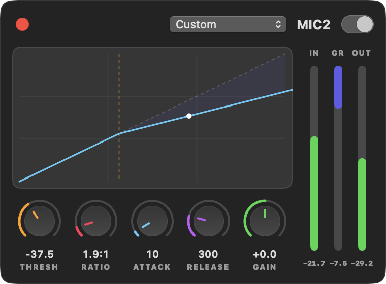

TotalMix in the menu bar
Volume, Dim, Mono and levels from your Mac’s keys.
Runs on macOS 14 or newer, Apple Silicon and Intel.
What the popover opens



What the keys do
- Volume keys
- Any output, one to ten dB a step
- Mute key
- Dim or mute, your choice
- Shift Cmd M
- Mono
- Option Up / Down
- Switches the output the keys control
- Speaker B
- The second pair of monitors
Every shortcut can be reassigned. The README lists the rest.
Install in three steps
-
01
Download RME-Control-3.8.pkg and open it.
-
02
The app is not notarized, so allow it once under Privacy and Security. The installer clears the quarantine flag for you.
-
03
Grant Accessibility in the same pane so the volume keys reach TotalMix.
On the label
- Version
- 3.8
- System
- macOS 14 Sonoma or newer
- Architecture
- arm64 and x86_64, one universal build
- Interface
- 14 languages
- License
- MIT